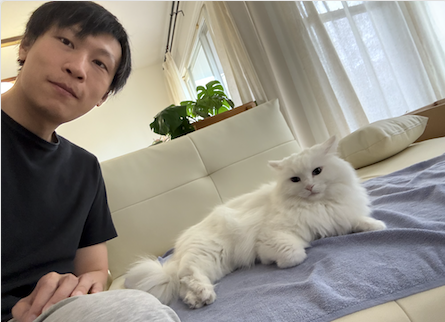

Email: hliu96 at stevens edu
Office: Gateway Center N416
I am an assistant professor at Stevens Institute of Technology. I work in the areas of computer architecture and parallel computing.
I obtained my Ph.D. degree at William & Mary advised by Adwait Jog. I received my M.Sc. degree at the University of Hong Kong working with Cho-Li Wang, and my B.Eng. degree from Shandong University.
I am looking for self-motivated students interested in research in high-performance computing, systems, and compilers. Both PhD positions and research assistantships are available. If you are interested, please email me your CV and briefly explain your motivation and research interests.